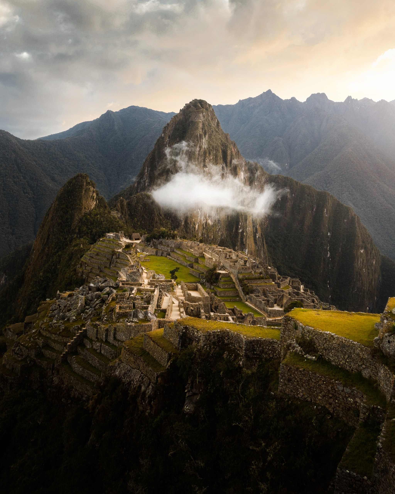
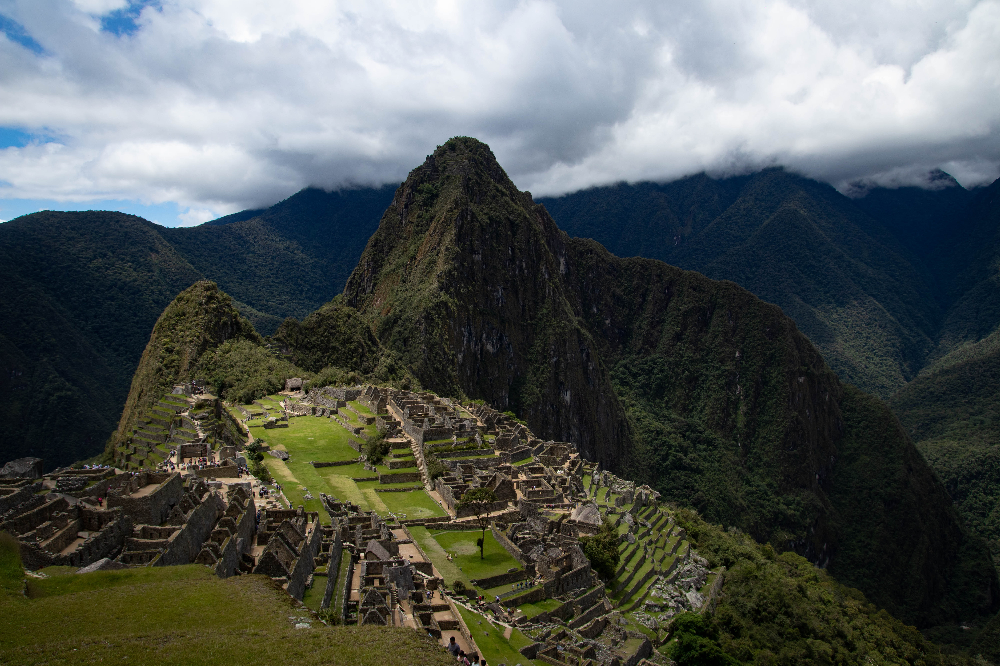
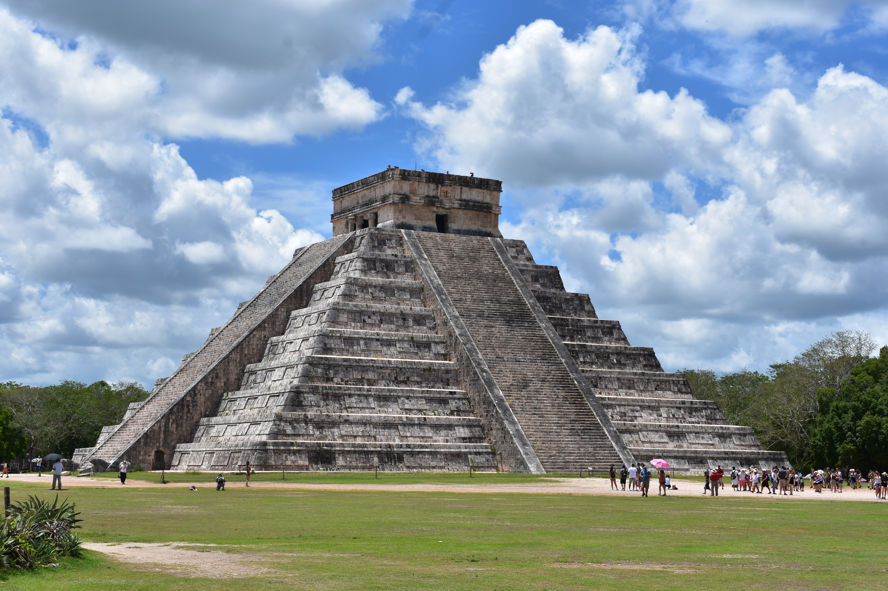

Machu Pichu Photos Photo by Trace Hudson from Pexels  Photo by Ana Paula Nardini from Pexels  Videos
Chichen Itza Photos Photo by Christina Warner on Unsplash  unsplash-logoChristina Warner Videos Videvo Video by Videvo
Taj Mahal Photos Photo by Chee Huey Wong from Pexels Videos Subrato Sengupta Video by Subrato Sengupta from Pexels